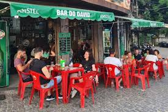
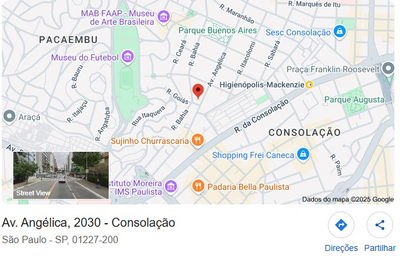

É quarta-feira!! Dia de Feijoada do Fernas, Feijoada é uma designação portuguesa a um prato da culinária transmontana que se popularizou também nos demais países lusófonos como Brasil, Angola, Moçambique, Timor-Leste e Macau.[1] Consiste num guisado de feijão, normalmente com carne, e quase sempre acompanhado com arroz.
Loja 1 - Paulista
 Avenida Angélica, 2030